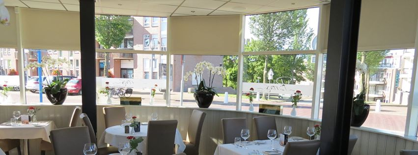
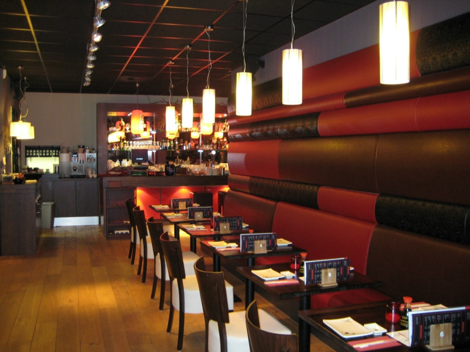
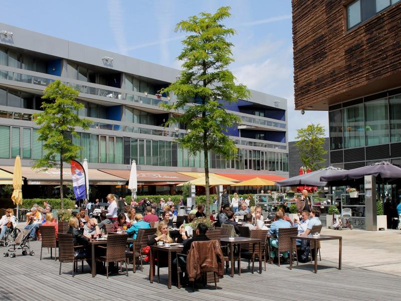
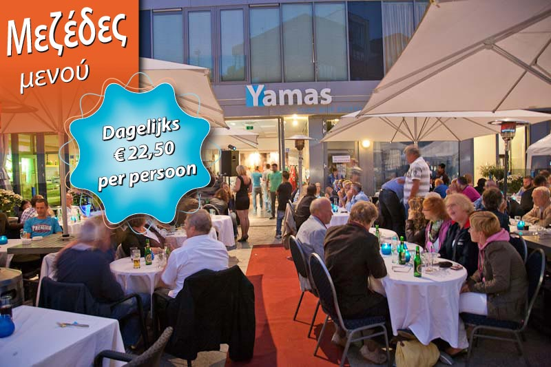
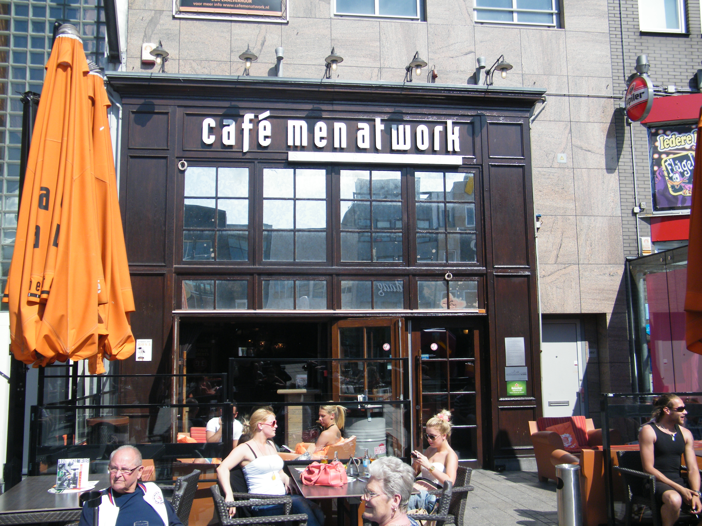
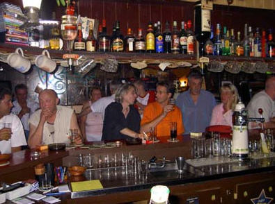

Studenten hebben niet al het geld van de wereld, maar willen wel af en toe een beetje netjes uiteten.
Almere heeft een goed aanbod van wat duurdere restaurants en ook wat goedkoper natuurlijk.
De keuze is dan helemaal aan jou,
Hier hebben we een kort overzicht van wat er allemaal in Almere is qua cafetaria.
Door op de plaatjes te klikken kom je bij de website van het restaurant
Dus dan kan je meteen reserveren!.
Bij brons is een restaurant die zich erg focussed op duurzaamheid,
Bijvoorbeeld van het aanbieden van kraanwater als alternatief voor flessen bronwater,
Ook heeft deze menukaart meerdere vegetarische gerechten,
bij het inkopen van vlees word goed rekening gehouden met het dierenwelzijn.
En dit is maar een klein deel van alles wat hun doen voor duurzaamheid,

------------------------------------------------------------------------------------
Dit is een all you can eat restaurant
Dit restaurant is gespecialiseerd in de japanse keuken en kost ongeveer 25 euro
Voor een heel dinner met wat drankjes erbij
Bij Kimono heb je 6 rondes waar je maximaal 5 hapjes per persoon mag bestellen
Ook geeft kimono u de mogelijkheid om eten op te halen om thuis te nuttigen

------------------------------------------------------------------------------------
La cubanita is een tapas restaurant met allemaal verschillende hapjes.
Je hebt hier de mogelijkheid om onbeperkt tapas te eten voor maar 17,50 euro.
La Cubanita bevind zich in het centrum van almere, en is 7 dagen in de week open.
Het restaurant is cubaans ingericht en heeft een gezzelige sfeer.
De medewerkers zijn altijd erg vriendelijk en het eten is top!.

------------------------------------------------------------------------------------
Yamas is een grieks restaurant op het belfort in almere
Bij Yamas kun je in het restaurant eten, het laten bezorgen of het ophalen
Je kunt bij Yamas snel een broodje eten in de middag, of gewoon uit eten gaan
Voor slechts € 22,50 per persoon kun je bij Yamas onbeperkt mezedes eten.
Je hebt de keuze uit 50 Griekse hapjes, waaronder salades, vis, vlees en vegetarische gerechten.

------------------------------------------------------------------------------------
Cafe men at work is een cafe/bar in het hart van almere-stad
Bij cafe men at work heeft u de mogelijkheid om overdag een drankje te doen op het terras
Of s'avonds uitgaan en feesten tot 5:00 in de ochtend
En elke zaterdag en zondag tussen 22:00 en 00:00 zijn de drankjes 1 of 2 euro
dus indrinken is overbodig.

------------------------------------------------------------------------------------
Café Le Cameleon ligt aan het Deventerpad in Almere
Vooral op de dinsdagavond is het er druk.
De openingstijden zijn, op zijn zachts gezegd, ruim.
De kroeg is namelijk dagelijks geopen van 20.00 uur tot 05.00 uur
Je kunt er ook een potje darten of poolen. Wil je naast je biertje iets te eten, dat kan !
Bij Le Cameleon hebben namelijk ze ook een kleine kaart
Zo kun je heerlijk iets snacken en tegelijkertijd genieten van je biertje.
